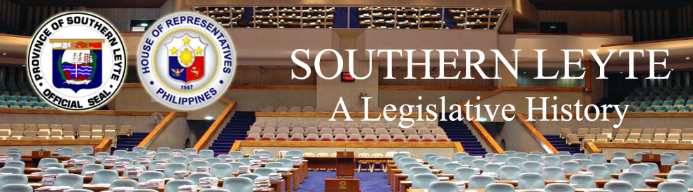

| History |
| Legislators |
| Laws |
| About |
 |
SOUTHERN LEYTE
The following text/information are lifted from the book of Lee W. Vance entitled Tracing your Philippine Ancestors which was published in Provo, Utah by Stevenson’s Genealogical Center in 1980 and Symbols of the State by the Department of Interior and Local Government of the Republic of the Philippines in 1998.
The province of Southern Leyte consists of the southeastern part of Leyte Island and the dependent islands of Panaoan and Limasawa off its coast, all in the southeastern Visayas region of the central Philippines. It is bounded on the north and west by Leyte province, and by the Surigao Strait to the east, the Mindanao Sea to the south, and the Canigao Channel to the southwest.
Southern Leyte shares its history with its mother province, Leyte, of which it formed a part until 1959.
Following is a time line of events that led to the creation and development of the province of Leyte from as far back as official records, researches and other resources provide:
DATE |
EVENT |
|
Magellan sailed from the island of Homonhon (south of Samar), to the island of Limasawa south of Leyte, |
|
A blood compact of peace between Rajah Kolambu and Magellan was held |
|
In Lamasawa, on Easter Sunday, Fr. Pedro de Valderama, along with others, celebrated the first mass ever held on Philippine soil, which was attended by Rajah Siago and Magellan and their respective followers. |
|
the Spanish navigator, Villalobos, while searching for provisions, landed on the island of Leyte and named it “Felipina,” after Prince Philip of pain. This name, in a slighty changed form “Filipinas,” was later given to the entire archipelago, and is the origin of their present name, the Philippines. |
|
Miguel Lopez de Legazpi also visited the Leyte area, stopping at Abuyog and Limasawa. |
|
Jesuit mission had been established at Barugo |
|
Jesuit mission had been established at Abuyog , followed by others at; Dulag, Carigara, Palo, Tanaoan, Alang-alang, and Ormoc. |
|
Leyte (originally named “Tandaya”), together with Samar (named “Ibabao”), was under the jurisdiction of Cebu. |
|
Leyte had already been made a politico-military province, which included Samar within its territory, and had its capital at Carigara. |
|
Samar was separated from Leyte and organized into a new province. |
|
The parishes of eastern Leyte (namely, Leyte, Carigara, Barugo, Jaro, Babatngon, Tacloban, Palo, Alangalang, Tanauan, Tolosa, Dulag, Abuyog, Hinunangan and Hinundayan) were turned over to the Franciscans |
|
The rest of the parishes in western Leyte were turned over by the Augustinians to the diocesan secular clergy. |
|
Tacloban became the capital of the province until today. Former capitals were the ff: Carigara, later transferred to Palo, then to Tanawan. |
|
The Port of Tacloban was opened to foreign trade. |
|
Leyte became involved in the Philippine Revolution |
|
End of the Spanish regime. The Franciscans (who were all Spanish) were forced to leave their eastern Leyte parishes to the care of the diocesan secular clergy. |
|
U.S. forces ruled the province until this date |
|
ACT NO. 121 extended the provisions of the Provincial Government Act to the province of Leyte. |
|
By virtue of ACT 954, the municipalities of the province of Leyte were reduced from 49 to 33. |
|
ACT 1616 an act changing the name of the municipality of Almeria to that of Kawayan, and transferring the seat of its municipal government to the present barrio of Kawayan; also changing the name of the municipality of San Ricardo to that of Pintuyan, and transferring the seat of its municipal government to the present barrio of Pintuyan. |
|
The name of the municipality of Sogod Norte was changed to Sogod, and that of Sogod Sur to Libagon by virtue of ACT 2290 |
|
ACT 3705 An act that the municipality of Delgado, Leyte, shall be called "Anahawan". |
|
During World War II, the Japanese Imperial Army, after bombing the airfield of Leyte, landed in Tacloban |
|
The Allied Philippine-American liberation force under General Douglas MacArthur landed at Palo, Tacloban and Dulag, thus fulfilling MacArthur’s famous pledge, “I shall return.” |
|
At a ceremony in front of the freshly-liberated capitol building in Tacloban, General MacArthur, accompanied by President Sergio Osmena, announced the reestablishment of the Philippine Commonwealth Government, which had formerly been in exile during the Japanese occupation of the Philippines. President Osmena made Tacloban the temporary seat of the Commonwealth. Later, the provincial government of Leyte and municipal governments of its town were reestablished. |
|
Ormoc became a chartered city by virtue of REPUBLIC ACT NO. 179. |
|
R.A. 191 An act creating the municipality of Isabel, Province of Leyte. |
|
R.A.. 232 An act to separate the barrios of Ungale, Tuo, and Inasuyan from the Municipality of Caibiran, Province of Leyte, and to merge these barrios with the municipality of Kawayan, of the same province. |
|
R.A. 464 An act changing the name of Barrio Haclagan, in the Municipality of Tanawan, Province of Leyte, to Sto. Niño. |
|
R.A. 522 An act to create the Municipality of Bontoc in the Province of Leyte. |
|
R.A. 542 An act creating the Municipality of Kananga in the Province of Leyte. |
|
Tacloban followed soon after, receiving its city charter by virtue of Republic Act 460. |
|
R.A. 1220 An act creating the municipality of Mayorga in the Province of Leyte. |
|
R.A. 1281 An act changing the name of Barrio Malpag in the Municipality of San Miguel, Province of Leyte, to Barrio Babulak. |
|
R.A. 1282 An act converting the Sitios of Tuno, Jubay, and Napantao, Municipality of San Francisco, Province of Leyte, into barrios of said municipality. |
|
R.A. 1333 An act changing the names of certain barrios in the Municipality of Naval, Province of Leyte. |
|
R.A. 1614 An act creating the Municipality of Matagob in the Province of Leyte. |
|
R.A. 1649 An act transferring the barrios of Capahu-an and Guingawan, Municipality of Dagami, Province of Leyte, to the Municipality of Tabontabon. |
|
R.A. 1671 An act converting the sitios of Kanhaayon, Kapudlosan, Himokilan, Anolon, Mahilom, Baldoza and Tagbibi, Municipality of Hindang, Province of Leyte, into barrios of said municipality. |
|
R.A. 1690 An act creating certain barrios in the municipality of Mayorga, Province of Leyte. |
|
R.A. 1696 An act changing the name of the Barrio of Curba, Municipality of Santa Fe, Province of Leyte, to Barrio San Roque. |
|
R.A. 1697 An act converting the sitios of Pinanhadsan and Km. 17, Municipality of Santa Fe of Leyte, into barrios of said municipality to be known as the barrios of Katipunan and Milagrosa, respectively. |
|
R.A. 1698 An act converting the Sitio of Inawangan, Municipality of Dulag, Province of Leyte, into of said municipality to be known as the Barrio of Kamitok. |
|
R.A. 1719 An act creating certain barrios in the municipality of Tabaã‘go, Province of Leyte. |
|
R.A. 1722 An act converting the Sitio of Campitic, in the Municipality of Palo, Province of Leyte, into a barrio to be known as the Barrio of Campitic. |
|
R.A. 1723 An act creating the barrios of Baras and Candahug in the Municipality of Palo, Province of Leyte. |
|
R.A. 1724 An act changing the name of Barrio Cogon-Bingkay in the municipality of Dulag, Province of Leyte, to Salvacion. |
|
R.A. 1725 An act converting the Sitio of Pamoblaran, in the Municipality of Dulag, Province of Leyte, into a barrio to be known as the Barrio of San Antonio. |
|
R.A. 1726 An act changing the name of Barrio Mat-I in the municipality of Dulag, Province of Leyte, to President Roxas. |
|
R.A. 1732 An act creating certain barrios in the municipality of Babatngon, Province of Leyte. |
|
R.A. 1740 An act changing the name of the Barrio of Malirong, Municipality of Palo, Province of Leyte, to Libertad. |
|
R.A. 1742 An act creating certain barrios in the Municipality of Macrohon, Province of Leyte. |
|
R.A. 2034 An act abolishing the Barrio of Higatangan, Higatangan Island, Municipality of Naval, Province of Leyte, and creating instead the barrios of Libertad and Mabini in the same municipality. |
|
R.A. 2132 An act creating the Barrio of Liberty in the Municipality of Palompon, Province of Leyte. |
|
R.A. 2162 An act changing the names of certain barrios in the Municipality of Naval, Province of Leyte. |
|
R.A. 2169 An act creating certain barrio in the Municipality of Tabango, Province of Leyte. |
|
R.A. 2174 An act creating certain barrios in the Municipality of Malitbog, Province of Leyte. |
|
R.A. 2199 An act creating the barrio of Hagichikan in the Municipality of Naval, Province of Leyte. |
|
R.A. 2200 An act constituting the sitios of Bobowa and Inakaran into Barrio Libertad, Sitios Campo Uno and Campo Dos into Barrio Sto Niño, Sitios Balogo, Hagumayan and Hubas into Barrio Balogo, Sitios Guinodiongan and Pangdan into barrio Guinodiongan, all of the municipality of Capoocan, Province of Leyte. |
|
R.A. 2206 An act creating barrios in the Province of Leyte. |
|
15 municipalities were split off from Leyte province and organized as the new province of Southern Leyte by virtue of R.A. 2227, approved May 22, 1959. At that time, the new province was comprised of the municipalities of Maasin (the capital), Padre Burgos, Macrohon, Malitbog, Bontoc, Sogod, Libagan, Liloan, Pintuyan, San Francisco, Saint Bernard, Cabalian, Anahawan, Hinundayan, and Hinundangan. |
|
The lone district of Southern Leyte is made up of Anahawan, Bontoc, Hinunangan, Libagon, Liloan, Limasawa, Macroton. Malitbog, Padre Burgos, Pintuyan, Saint Bernard, San Franchisco, San Juan, San Ricardo, Silago, Sogod, Tomas Oppus and Maasin City. |
Sources:
1Vance, L. W. (1980). Tracing your Philippine ancestors. Provo, Utah: Stevenson's Genealogical Center.
2Velasco, C. R. and Untivero, R. G. (1998). Symbols of the State. Manila: National Media Production Center.

Congressional Library Bureau
Legislative Library Service